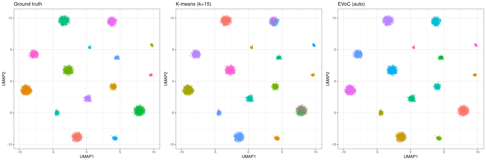

library(manifoldsR)
library(magrittr)
library(ggplot2)
library(data.table)
#>
#> Attaching package: 'data.table'
#> The following object is masked from 'package:base':
#>
#> %notin%Clustering methods in manifoldsR (with emphasis on EVoC)
2026-08-04
Clustering in manifoldsR
manifoldsR provides two clustering approaches (for now): k-means (full Lloyd’s and mini-batch) and more importantly EVoC (Embedding Vector Oriented Clustering). Both are implemented in Rust with SIMD acceleration, heavy parallelism and the cache-friendly memory layouts for speed. The package also ships some cluster evaluation metrics (ARI, silhouette score and inertia) so you can assess the results without having to load in another package (of course also made fast in Rust… You know the drill by now).
Algorithms at a glance
K-means partitions data into exactly k clusters by iteratively assigning points to the nearest centroid and recomputing centroids as cluster means.
The full (Lloyd’s) implementation in manifoldsR is heavily optimised (original from ann-search-rs). For high-dimensional data (dim >= 96), it defaults to the Hamerly’s algorithm: per-point upper and lower distance bounds prune the vast majority of distance computations after the first few iterations, while GEMM-based assignment (defaulted to when the dimensionality is high enough) keeps the remaining work cache-friendly. For Euclidean distance, this typically prunes 90%+ of point-centroid comparisons after 3-4 iterations, meaning convergence cost is closer to a handful of full passes than the theoretical worst case. For cosine distance (where Hamerly’s bounds do not apply, since cosine lacks the triangle inequality), a full GEMM reassignment is performed each iteration. Lower-dimensional data (dim < 96) falls back to direct SIMD-accelerated loops, which avoid the GEMM kernel overhead at small dimensions. (If you wish you can actually control the exact dispatch. The params_kmeans() give you tight control if needed.)
The mini-batch variant (Sculley 2010) samples a random subset of points per iteration and applies an incremental centroid update with a decaying learning rate (eta = 1/count). The appeal is that each iteration is cheap: only batch_size distance computations instead of n. In practice, however, the full version’s bound-based pruning is so aggressive that mini-batch does not offer a speed advantage until data sets become very large (roughly 10M+ points) or cluster structure is messy enough that Hamerly’s pruning cannot eliminate most candidates. At moderate scales (up to ~1M), the full version often converges faster in wall-clock time.
Where mini-batch does differ meaningfully is in its behaviour under over-specification of k. Because the incremental learning rate causes centroids near dense clusters to stabilise quickly (their counts grow large, shrinking eta), extra centroids in low-density regions receive few updates and effectively starve. The result is that mini-batch k-means is more robust to setting k higher than the true number of clusters, i.e., it naturally concentrates mass on the real structure rather than forcing every centroid to carve out territory.
EVoC (Embedding Vector Oriented Clustering) takes a fundamentally different approach. It constructs a k-nearest neighbour graph, learns a lower-dimensional embedding optimised for clustering (similar to UMAP, but with more target dimensions and a different loss focus), then applies hierarchical density-based clustering (in the spirit of HDBSCAN) with multi-layer persistence analysis. The key advantage is that EVoC does not require you to specify the number of clusters – it discovers them automatically and returns multiple layers of granularity ranked by persistence. It also handles noise and outliers naturally, assigning them a label of -1.
Synthetic data
We generate a synthetic data set with well-separated clusters in 128 dimensions. This lets us evaluate clustering quality against known ground truth.
cluster_data <- manifold_synthetic_data(
type = "clusters",
n_samples = 10000L,
dim = 128L,
parameters = params_clusters(n_clusters = 15L)
)
n_true <- length(unique(cluster_data$membership))
cat("True number of clusters:", n_true, "\n")
#> True number of clusters: 15
cat("Data dimensions:", dim(cluster_data$data), "\n")
#> Data dimensions: 10000 128For visualisation throughout this vignette, we compute a 2D UMAP embedding once and reuse it to colour by different cluster assignments.
Let’s plot the UMAP with the original cluster assignment

K-means clustering
Full k-means at the correct k
Let’s start with the easy case – we know the true number of clusters and ask k-means to find exactly that.
km_correct <- kmeans_cluster(
data = cluster_data$data,
k = n_true,
method = "full",
seed = 42L,
.verbose = TRUE
)
#> Running full k-means (k=15, metric=euclidean)
base_df[, km_assignment := as.factor(membership(km_correct))]
ggplot(base_df, aes(x = UMAP1, y = UMAP2)) +
geom_point(aes(colour = km_assignment), size = 0.5, alpha = 0.5) +
theme_bw() +
ggtitle(sprintf("Full k-means (k=%d)", n_true))
cat("ARI:", calc_ari(cluster_data$membership, membership(km_correct)), "\n")
#> ARI: 0.8671586
cat("Inertia:", calc_inertia(km_correct, data = cluster_data$data), "\n")
#> Inertia: 4973336
cat(
"Silhouette:",
calc_silhouette_score(
cluster_data$data,
membership(km_correct)
)$mean_silhouette,
"\n"
)
#> Silhouette: 0.6270099Over-specifying k: full vs mini-batch
In practice, you rarely know the true number of clusters. A common approach is to set k higher than expected and see what happens. This is where the two k-means variants behave quite differently.
k_over <- 25L
km_full <- kmeans_cluster(
data = cluster_data$data,
k = k_over,
method = "full",
seed = 42L,
.verbose = TRUE
)
#> Running full k-means (k=25, metric=euclidean)
km_mini <- kmeans_cluster(
data = cluster_data$data,
k = k_over,
method = "minibatch",
# reduced batch size here, because it's a small data set
kmeans_params = params_kmeans(batch_size = 1024L),
seed = 42L,
.verbose = TRUE
)
#> Running mini-batch k-means (k=25, batch_size=1024, metric=euclidean)
base_df[, `:=`(
km_full_over = as.factor(membership(km_full)),
km_mini_over = as.factor(membership(km_mini))
)]
p_full <- ggplot(base_df, aes(x = UMAP1, y = UMAP2)) +
geom_point(aes(colour = km_full_over), size = 0.5, alpha = 0.5) +
theme_bw() +
theme(legend.position = "none") +
ggtitle(sprintf("Full k-means (k=%d)", k_over))
p_mini <- ggplot(base_df, aes(x = UMAP1, y = UMAP2)) +
geom_point(aes(colour = km_mini_over), size = 0.5, alpha = 0.5) +
theme_bw() +
theme(legend.position = "none") +
ggtitle(sprintf("Mini-batch k-means (k=%d)", k_over))
gridExtra::grid.arrange(p_full, p_mini, ncol = 2)
Full k-means distributes points across all 25 centroids, splitting true clusters in two. Mini-batch k-means, due to its incremental learning rate, effectively lets some centroids starve; they settle in low-density regions and attract very few points. The result more closely mirrors the true structure.
cat("Full k-means:\n")
#> Full k-means:
cat(" ARI:", calc_ari(cluster_data$membership, membership(km_full)), "\n")
#> ARI: 0.7085234
cat(" Effective clusters:", length(unique(membership(km_full))), "\n")
#> Effective clusters: 25
cat(
" Silhouette:",
calc_silhouette_score(
cluster_data$data,
membership(km_full)
)$mean_silhouette,
"\n"
)
#> Silhouette: 0.4139893
cat("\nMini-batch k-means:\n")
#>
#> Mini-batch k-means:
cat(" ARI:", calc_ari(cluster_data$membership, membership(km_mini)), "\n")
#> ARI: 0.9051442
cat(" Effective clusters:", length(unique(membership(km_mini))), "\n")
#> Effective clusters: 25
cat(
" Silhouette:",
calc_silhouette_score(
cluster_data$data,
membership(km_mini)
)$mean_silhouette,
"\n"
)
#> Silhouette: 0.4005103Elbow plot with inertia
Inertia (within-cluster sum of squares) decreases monotonically as k increases. The “elbow”, the point where adding more clusters stops yielding meaningful improvement, suggests a reasonable k.
k_values <- seq(2L, 30L, by = 2L)
elbow_results <- lapply(k_values, function(k) {
res <- kmeans_cluster(
data = cluster_data$data,
k = k,
method = "full",
seed = 42L,
.verbose = FALSE
)
data.table(
k = k,
inertia = calc_inertia(res, data = cluster_data$data),
ari = calc_ari(cluster_data$membership, membership(res))
)
}) %>%
rbindlist()
ggplot(elbow_results, aes(x = k)) +
geom_line(aes(y = inertia)) +
geom_point(aes(y = inertia)) +
geom_vline(xintercept = n_true, linetype = "dashed", colour = "red") +
annotate(
"text",
x = n_true + 1,
y = max(elbow_results$inertia) * 0.9,
label = sprintf("true k = %d", n_true),
hjust = 0,
colour = "red"
) +
theme_bw() +
labs(x = "k", y = "Inertia (WCSS)") +
ggtitle("Elbow plot")
ggplot(elbow_results, aes(x = k, y = ari)) +
geom_line() +
geom_point() +
geom_vline(xintercept = n_true, linetype = "dashed", colour = "red") +
theme_bw() +
labs(x = "k", y = "Adjusted Rand Index") +
ggtitle("ARI vs k")
ARI peaks at the true number of clusters and degrades as k-means is forced to split well-separated groups.
EVoC clustering
EVoC does not require specifying k. It discovers cluster structure automatically and returns multiple layers of granularity.
evoc_res <- evoc(
data = cluster_data$data,
n_neighbours = 15L,
seed = 42L,
.verbose = TRUE
)
evoc_res
#> Evoc
#> layers: 4
#> best layer: 3
#> best persistence: 2547.222
#> knn: not stored
evoc_best <- best_membership(evoc_res)
cat("Selected layer:", evoc_best$layer, "\n")
#> Selected layer: 3
cat("Persistence score:", round(evoc_best$persistence, 4), "\n")
#> Persistence score: 2547.222
cat(
"Clusters found:",
length(unique(evoc_best$labels[evoc_best$labels != -1L])),
"\n"
)
#> Clusters found: 15
cat("Noise points:", sum(evoc_best$labels == -1L), "\n")
#> Noise points: 0
base_df[, evoc_label := as.factor(evoc_best$labels)]
ggplot(base_df, aes(x = UMAP1, y = UMAP2)) +
geom_point(aes(colour = evoc_label), size = 0.5, alpha = 0.5) +
theme_bw() +
ggtitle("EVoC (best persistence layer)")
We can appreciate that EVoC identified (nearly) perfectly the ground truth…
This is also apparent in the ARI score of ≥0.99.
Multiple layers
EVoC returns a hierarchy of clusterings at different granularities, ranked by persistence. Layers with higher persistence scores represent more stable cluster structures.
n_layers <- length(evoc_res$persistence_scores)
persistence_df <- data.table(
layer = seq_len(n_layers),
persistence = evoc_res$persistence_scores,
n_clusters = vapply(
evoc_res$cluster_layers,
function(l) {
length(unique(l[l != -1L]))
},
integer(1)
)
)
ggplot(persistence_df, aes(x = layer, y = persistence)) +
geom_col() +
geom_text(aes(label = n_clusters), vjust = -0.5, size = 3) +
theme_bw() +
labs(x = "Layer", y = "Persistence score") +
ggtitle("EVoC layer persistence (numbers = cluster count)")
Approximate number of clusters
If you do have a rough idea of how many clusters to expect, you can guide EVoC with approx_n_clusters. This performs a binary search over the minimum cluster size parameter to target approximately that many clusters, returning a single layer.
evoc_approx <- evoc(
data = cluster_data$data,
n_neighbours = 15L,
evoc_params = params_evoc(approx_n_clusters = n_true),
seed = 42L,
.verbose = FALSE
)
evoc_approx_best <- best_membership(evoc_approx)
cat(
"Clusters found:",
length(unique(
evoc_approx_best$labels[evoc_approx_best$labels != -1L]
)),
"\n"
)
#> Clusters found: 15Comparison
Let’s just compare at the end the methods
base_df[, evoc_approx_label := as.factor(evoc_approx_best$labels)]
p_true <- ggplot(base_df, aes(x = UMAP1, y = UMAP2)) +
geom_point(aes(colour = true_cluster), size = 0.4, alpha = 0.5) +
theme_bw() +
theme(legend.position = "none") +
ggtitle("Ground truth")
p_km <- ggplot(base_df, aes(x = UMAP1, y = UMAP2)) +
geom_point(aes(colour = km_assignment), size = 0.4, alpha = 0.5) +
theme_bw() +
theme(legend.position = "none") +
ggtitle(sprintf("K-means (k=%d)", n_true))
p_evoc <- ggplot(base_df, aes(x = UMAP1, y = UMAP2)) +
geom_point(aes(colour = evoc_label), size = 0.4, alpha = 0.5) +
theme_bw() +
theme(legend.position = "none") +
ggtitle("EVoC (auto)")
gridExtra::grid.arrange(p_true, p_km, p_evoc, ncol = 3)
K-means requires specifying k and produces exactly that many clusters with no notion of noise. EVoC discovers the number of clusters automatically, handles noise and outliers, and provides multiple granularity layers. For well-separated clusters where you know k, both methods perform well (mini batch k-means can be superior pending the underlying data structure). EVoC shines when the number of clusters is unknown or the data contains noise, i.e., situations where k-means requires manual tuning and repeated runs with different k values.
The mini-batch variant of k-means offers a practical middle ground for large data sets: it converges faster and degrades more gracefully when k is over-specified, at the cost of slightly less precise centroid placement.